Energy on Earth
Graham H. Edwards
Earth & Environmental Geosciences
Energy comes from…
Energy comes from…
Stars
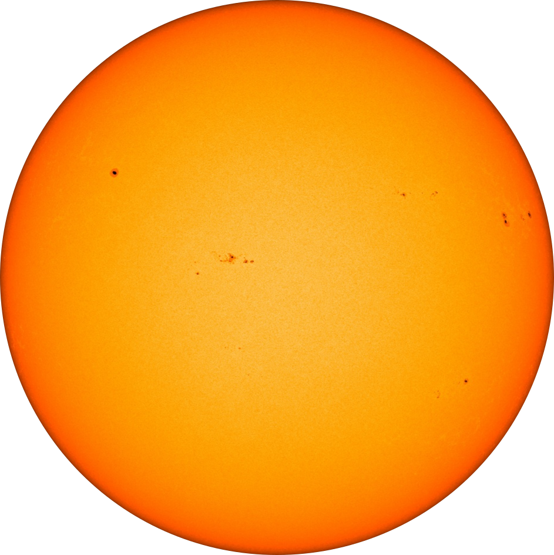Earth's interior
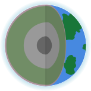Nuclear energy sources forged in high-energy astronomical environments
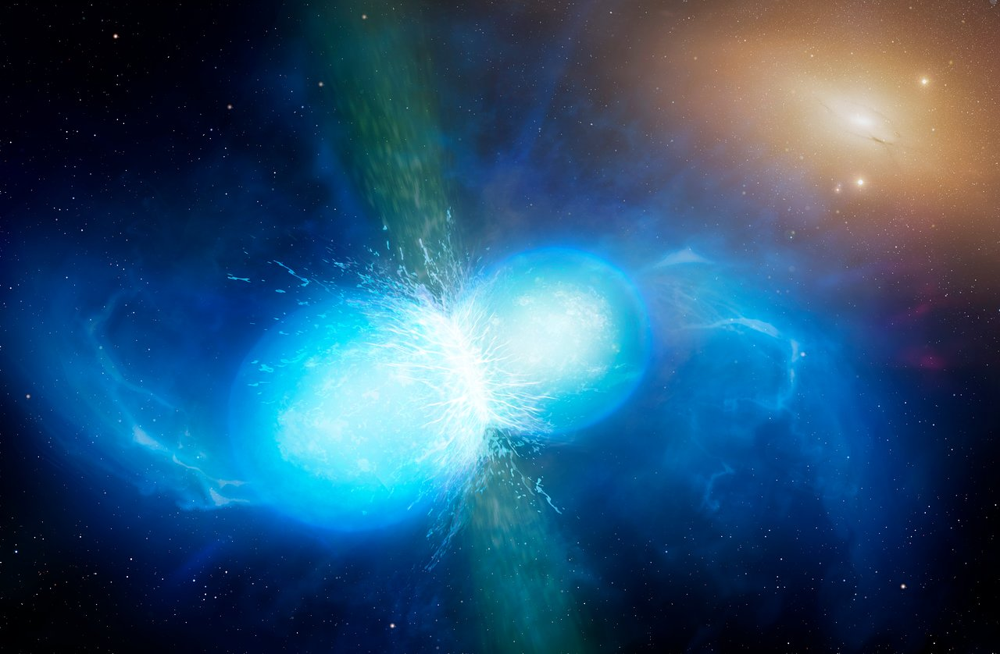☀️ Solar-derived energy ☀️


☀️ Solar-derived energy ☀️
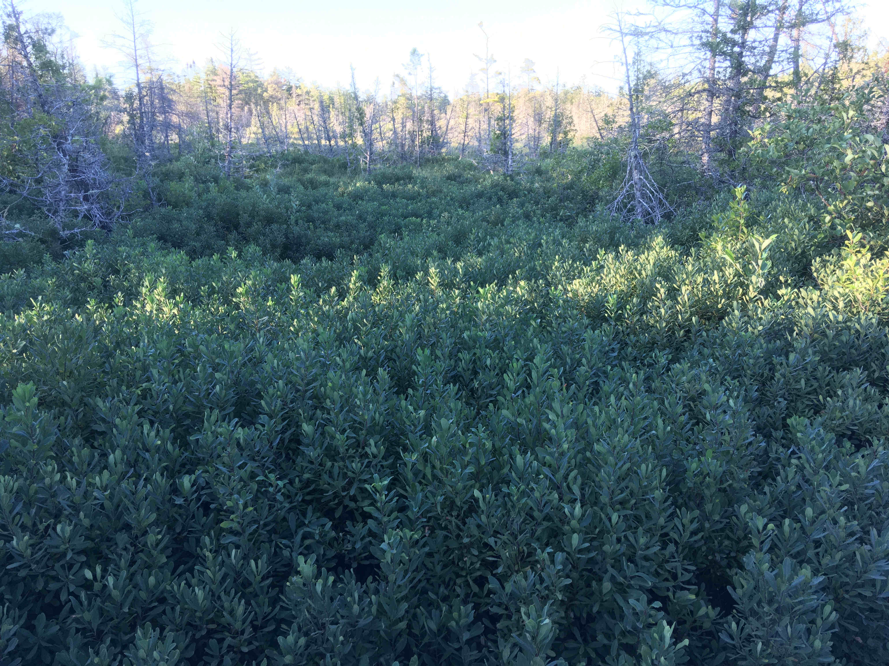Plants!
Burial of organic matter
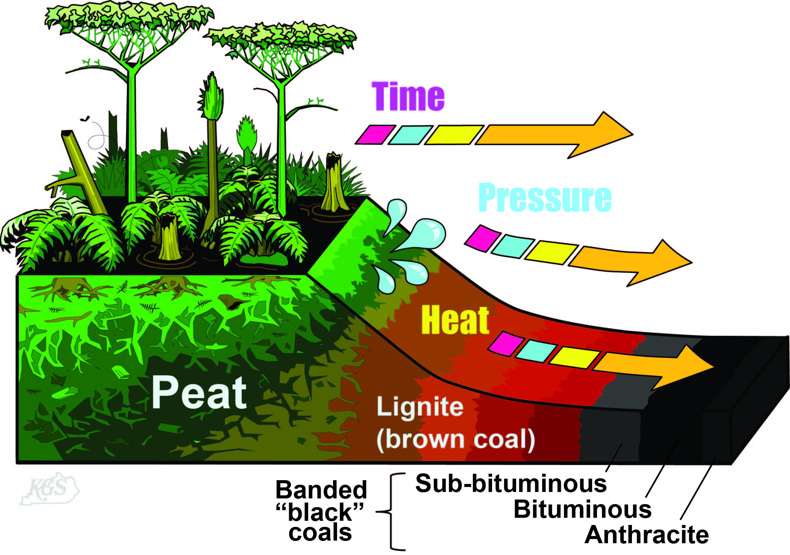Geothermal energy
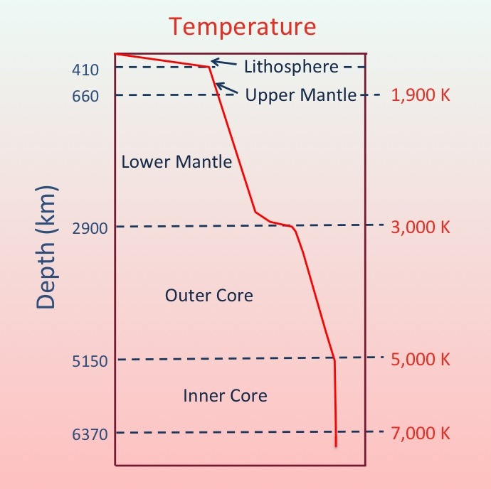
Coal & Petroleum (oil + gas)
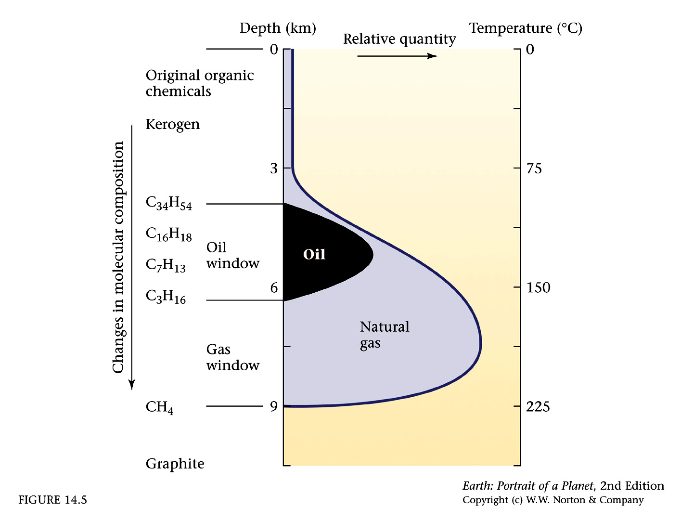The trouble with fossil fuels
Limited supply, supported by fracking
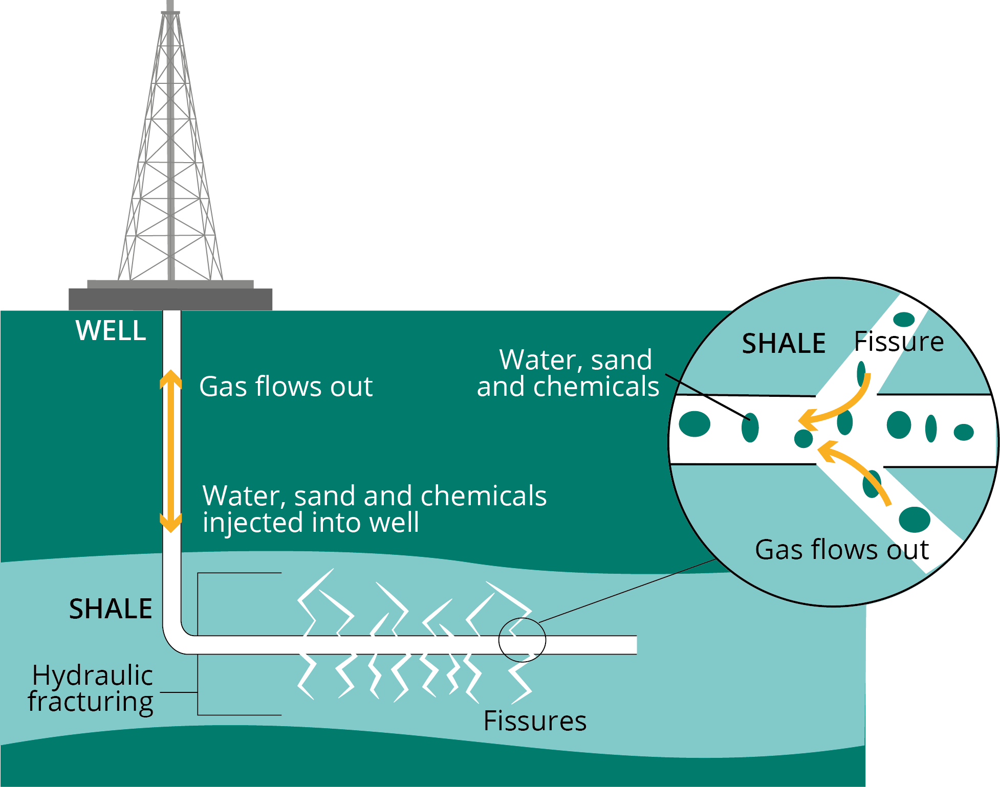The trouble with fossil fuels
"The Keeling curve" — instrumental atmospheric CO2 since 1958

The trouble with fossil fuels
The last 300 years


The trouble with fossil fuels
The last 10,000 years

The trouble with fossil fuels

The trouble with fossil fuels

Quick Shameless plug
Did you find this interesting?
Want to learn more?
Look for GEOS 3410 (Global Climate Change) in Fall 2027
My research program
I am a geochemist, cosmochemist, and geochronologist.
I use chemistry of Earth and planetary materials to reconstruct timescales of processes during Earth's recent Ice Age past and in the early history of our solar system.
Isotopes
Atoms of the same element with different masses.
| particle | charge |
|---|---|
| proton | + |
| electron | − |
| neutron | ○ |
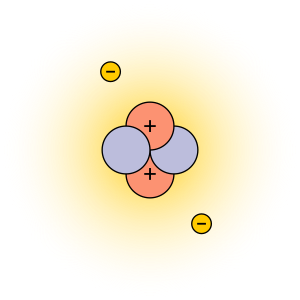 $$^4_2\text{He}$$
Isotopes
$$^3_2\text{He}$$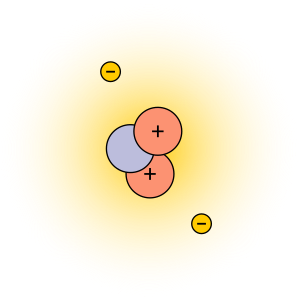
$$^4_2\text{He}$$
Telling time with radioactive isotopes
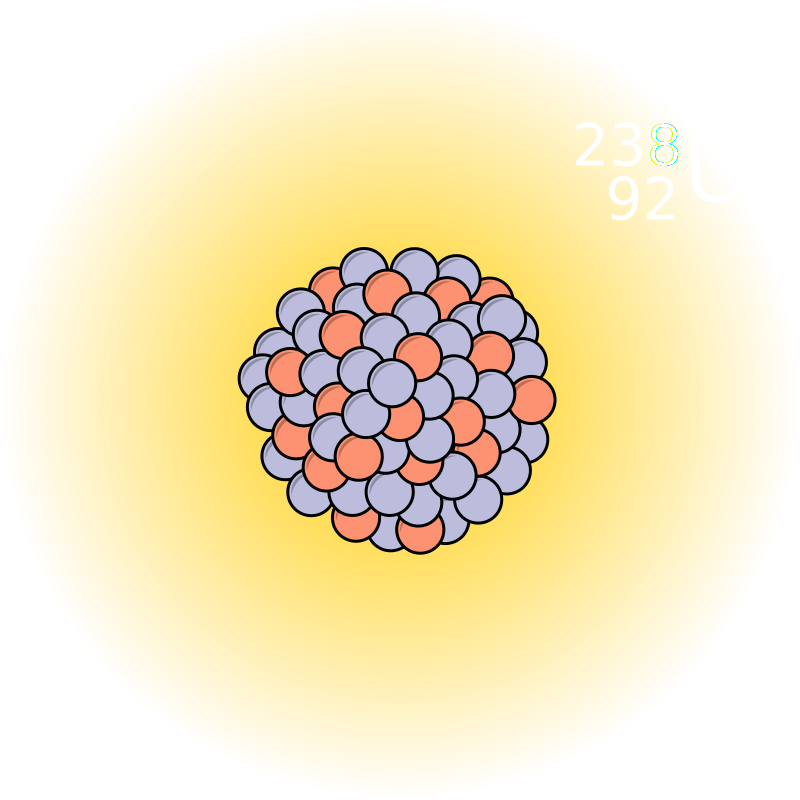Uranium-238
The uranium decay series
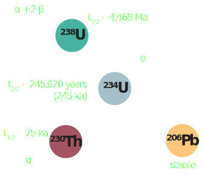Uranium-lead (U-Pb) and U-series chronometers
Mass spectrometry
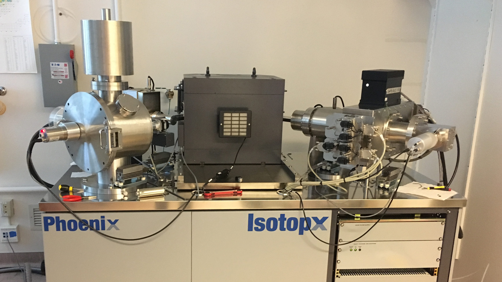X62 thermal ionization mass spectrometer — Keck Isotope Facility, University of California Santa Cruz
Tempo & process of planetary formation and ice sheet life cycles

Image credit: NASA/JPL

Image credit: GHE
Paleoclimate: Earth's climate history


Wait, this sounds pretty cool!
How did we figure out all of this rad stuff in the first place?

Maria Salomea Skłodowska-Curie
(image credit: Smithsonian)
My academic lineage

Mark Ingrham
University of Chicago

George Wetherill
Carnegie Institution of Washington

Randy Van Schmus
The University of Kansas

Samuel Bowring
Massachusetts Institute of Technology

Terrence Blackburn
University of California Santa Cruz

Graham Edwards
Trinity University
Foundational isotope geochemists, Manhattan Project scientists
Mark Ingrham

Clair Patterson
Image credits: U. Chicago, Caltech
The Manhattan Project

{kind=link}
{kind=link}
{kind=link}
.png){kind=link}
{kind=link}
- Research and development of nuclear weapons
- Formally active 1942–1946
- Big Science
- Multi-national collaboration (USA, UK, CA)
- $2 billion budget (∼30B today)
- Origins in the Einstein-Szilard letter (1939):
- Nazi uranium stockpiling
- Building a bomb?
The Trinity Shot
1945
Culmination of the Manhattan Project
- U.S. detonates nuclear bombs over Hiroshima (6 August 1945) and Nagasaki (9 August 1945).
- 150,000–246,000 casualties from blasts, burns, injuries, and acute radiation poisoning.
Nagasaki before and after bombing, Wikimedia

Atoms for Peace Initiative (1953)
- Cold War nuclear proliferation
- Mutually Assured Destruction
- First commercial nuclear power plant in 1957
- 91 online today
- 1,000→30,000 nuclear weapons (1953–1960s)
- Operation Plowshare (1958)
- civil engineering projects
- 35 detonations (1961–73)
The Manhattan Project & “Atoms for Peace” through time…
 1946–1975
1946–1975
 1977→
1977→
Nuclear power
The current contribution of nuclear energy to climate change mitigation is small and, according to current planning, will stay at this level in the near-to mid term future. Nuclear expansion strategies are not feasible due to resource limitations. New nuclear technologies without those limitations will not be ready in the critical time frame 2020 to 2050… But given the limited contribution to climate mitigation,complete phase out is a feasible option as well.
Muellner et al., 2021. "Nuclear energy - The solution to climate change?" Energy Policy 155. doi:10.1016/j.enpol.2021.112363
Nuclear at the bottom of the world
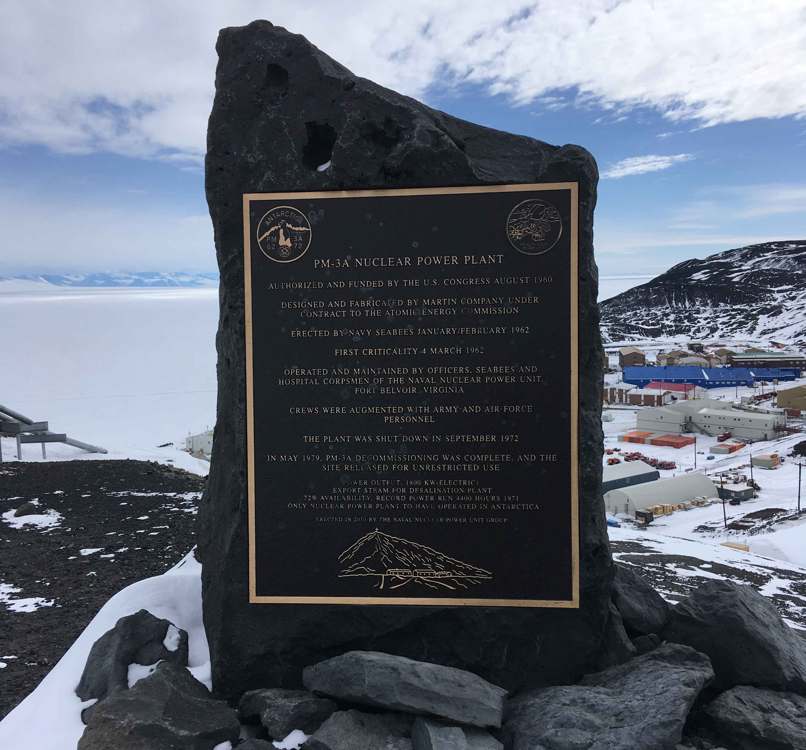Nuclear at the bottom of the world
PM-3A Nuclear Plant
1962–1972McMurdo Station, Antarctica
Antarctica shall be used for peaceful purposes onlyAntarctica Treaty, 1959
Antarctica and political soveirgnty
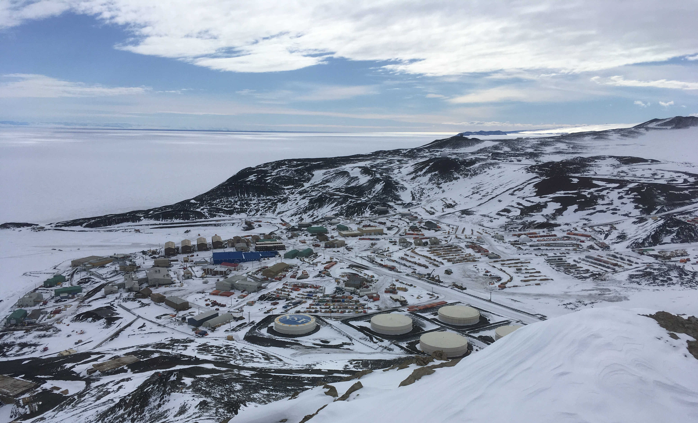McMurdo Station
Antarctica shall be used for peaceful purposes only
A militarized science force
Antarctica shall be used for peaceful purposes onlyAntarctica Treaty, 1959